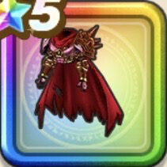

ウルノーガの鎧上
攻略班 9.5点 / ドルマ属性耐性+5%魔王ウルノーガへの耐性+10%メラ属性耐性+5%ドルマ属性耐性+5%ジバリア属性耐性+5%スキルの斬撃ダメージ+12%右隣のキャラクターのスキルの斬撃ダメージ-5%会心率+3%右隣のキャラクターのスキルHP回復効果-5%
くわしい特徴
【レベル別習得スキル】 Lv1ドルマ属性耐性+5% Lv3魔王ウルノーガへの耐性+10% Lv5メラ属性耐性+5% Lv10スキルの斬撃ダメージ+12% Lv10右隣のキャラクターのスキルの斬撃ダメージ-5% Lv10右隣のキャラクターのスキルHP回復効果-5% Lv15会心率+3% Lv18ドルマ属性耐性+5% Lv20すばやさ+7 Lv23ジバリア属性耐性+5% Lv25守備力+5 【限界突破スキル】 1凸攻撃力+12 2凸すばやさ+12 3凸守備力+12 4凸さいだいHP+12